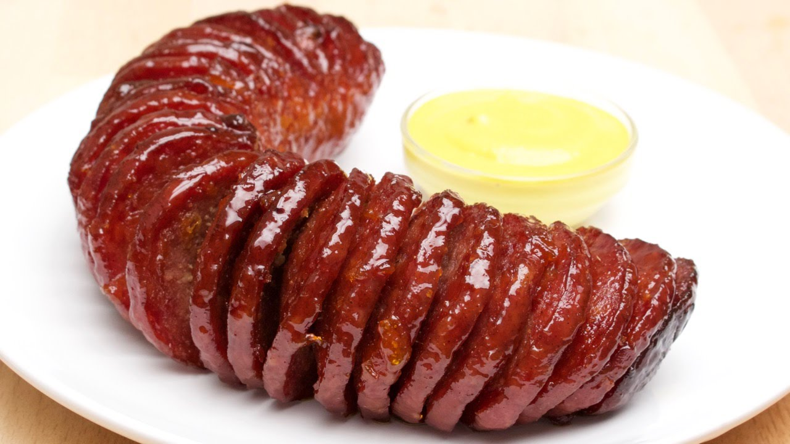

Salami Recipe

Description
This salami recipe can be used as an appetizer for any dinner party or get together. It's a crowd favorite and very easy to make.
It will be the first thing to fly off the table, and all your guests will be asking for more.
Ingredients
- A 14 to 16 ounce salami
- 1/2 cup apricot jam
- 1/2 TBSP hot sauce
- 1 TBSP maple syrup
- 1TBSP brown sugar
Steps
- Preheat oven to 400℉.
- Place two chopsticks on both sides of the salami (with plastic removed).
- Cut thin slices about 1/8 inch wide. The chopsticks should stop the knife from cutting through the entire height of the salami.
- Mix the apricot jam, hot sauce, maple syrup and brown sugar in a bowl.
- Pour over salami. Make sure it gets in between the cracks.
- Bake for 45 minutes or until it looks crispy enough for your taste. Every 15 minutes, remove from oven and scoop some of the sauce onto the salami. That keeps it nice and juicy.
- Serve with mustard.